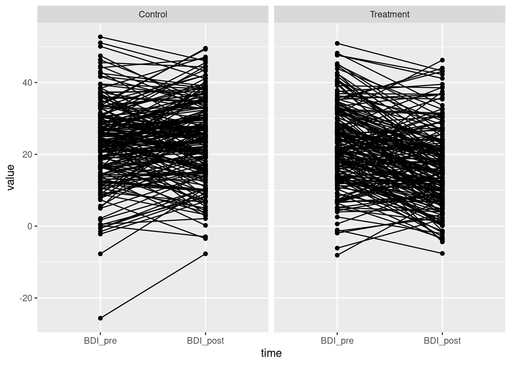
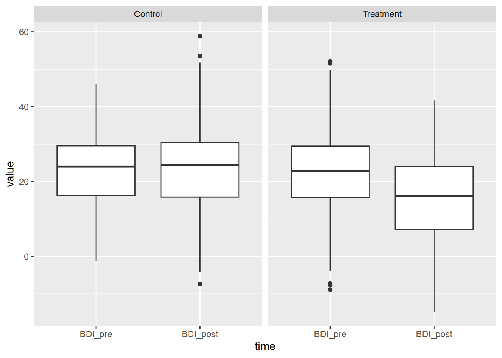
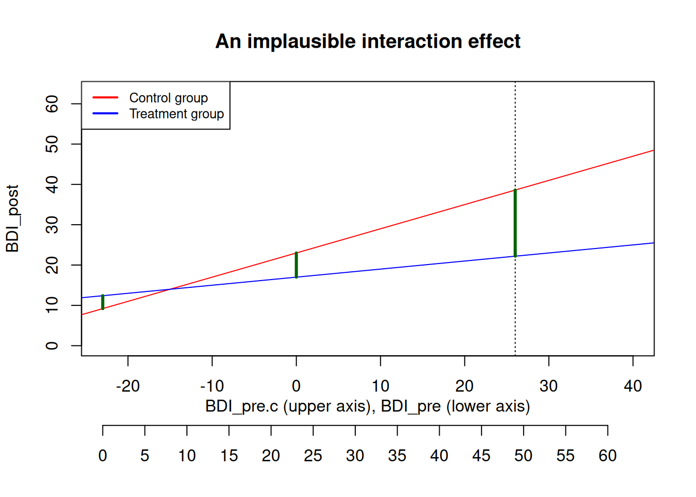
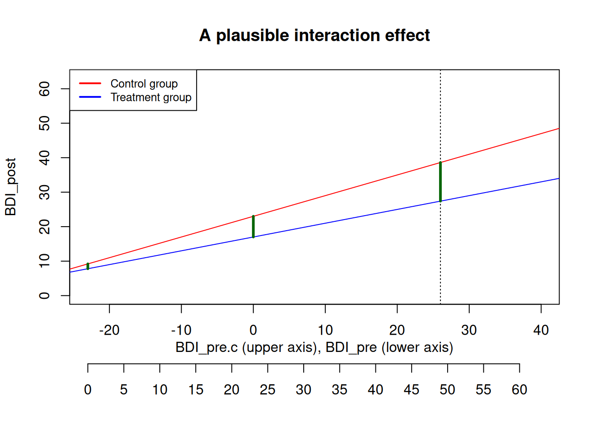

Ch. 2: Linear Model 2: Multiple predictors
Reading/working time: ~50 min.
In the first chapter on linear models, we had the simplest possible linear model: A continuous outcome variable is predicted by a single dichotomous predictor. In this chapter, we build up increasingly complex models by (a) adding a single continuous predictor and (b) modeling an interaction.
Adding a continuous predictor
We can improve our causal inference by including the pre-treatment baseline scores of depression into the model: This way, participants are “their own control group”, and we can explain a lot of (formerly) unexplained error variance by controlling for this between-person variance.
The raw effect size stays the same – the treatment still is expected to lead to a 6-point decrease in depression scores on average. But we expect that the residual (i.e., unexplained) variance in the model decreases by controlling for pre-treatment differences between participants. But how much will the residual variance be reduced? This depends on the pre-post-correlation.
If you have absolutely no idea about the pre-post-correlation, a typical default value is r=.5. But such generic defaults are always the very last resort – when you run a scientific study, we hope that you bring at least some domain knowledge 🤓
Get some real data as starting point
Instead of guessing the necessary quantities – in the current case, the pre-post-correlation – let’s look at real data. The “Beat the blues” (BtheB) data set from the HSAUR R package contains pre-treatment baseline values (bdi.pre), along with multiple post-treatment values. Here we focus on the first post-treatment assessment, 2 months after the treatment (bdi.2m).
[1] 0.6142207In our pilot data set, the pre-post-correlation is around r=.6. We will use this value in our simulations.
Update the sim() function
Now we add the continuous predictor into our sim() function. In order to simulate a correlated variable, we need to slightly change the workflow in our simulation.
We use the rmvnorm function from the Rfast package to create correlated, normally distributed variables. It takes three parameters:
-
n, the number of random observations -
mu, vector of mean values (one for each random variable) -
sigma, the variance-covariance-matrix of the random variables
For mu, we use the value 23 for both the pre and the post value. You can imagine that we only look at the control group: The mean value is not supposed to change systematically from pre to post (although each individual person can go somewhat up or down).
The variance-covariance-matrix defines two properties at once: the variance of each variable and the covariance to all other variables. In the two-variable case, the general matrix looks like:
\begin{bmatrix}
var_x & cov_{xy}\\
cov_{xy} & var_y
\end{bmatrix}
Note that the covariance in the diagonal has the same values, as cov_{xy} = cov_{yx}. As we need to enter the covariance into sigma, we need to convert the correlation into a covariance. Here’s the formula:
cor_{xy} = \frac{cov_{xy}}{\sigma_x\sigma_y} (Note: The denominator contains the standard deviation, not the variance.) Solved for the covariance yields:
cov_{xy} = cor_{xy}\sigma_X\sigma_y = 0.6 * \sqrt{117} * \sqrt{117} = 70.2
Hence, the specific variance-covariance-matrix sigma is in our case (generously rounded):
\begin{bmatrix} 117 & 70\\ 70 & 117 \end{bmatrix} Put it all together:
set.seed(0xBEEF)
mu <- c(23, 23) # the mean values of both variables
sigma <- matrix(
c(117, 70, 70, 117),
nrow = 2,
byrow = TRUE
)
df <- rmvnorm(n = 10000, mu = mu, sigma = sigma) |> data.frame()
names(df) <- c("BDI_pre", "BDI_post0")
# Check: in a large sample the correlation should be close to .6
cor(df) BDI_pre BDI_post0
BDI_pre 1.0000000 0.6021281
BDI_post0 0.6021281 1.0000000A very nice and user-friendly alternative for simulating correlated variables is the rnorm_multi function from the faux package.
We now have the correlated BDI_{pre} and BDI_{post} scores. Finally, we have to impose the treatment effect onto the post variable: In the control group, the mean value stays constant at 23 (what we already have simulated), in the treatment group, the BDI is 6 points lower:
We do not need to add an explicit intercept, as this is already encoded in the mean value of the simulated variables. (Alternatively, we could have simulated them centered on zero and then explicitly add the intercept in the model equation).
Let’s make a plausibility check by plotting the simulated variables. We first have to convert them into long format for a nicer plot:
# reduce to 100 cases for plotting; define factors
df2 <- df[1:400, ]
df2$id <- 1:nrow(df2)
df2$BDI_post0 <- NULL
df_long <- pivot_longer(df2, cols = c(BDI_pre, BDI_post), names_to = "time")
df_long$time <- factor(df_long$time, levels = c("BDI_pre", "BDI_post"))
df_long$treatment <- factor(
df_long$treatment,
levels = c(0, 1),
labels = c("Control", "Treatment")
)
ggplot(df_long, aes(x = time, y = value, group = id)) +
geom_point() +
geom_line() +
facet_wrap(~treatment)
ggplot(df_long, aes(x = time, y = value, group = time)) +
geom_boxplot() +
facet_wrap(~treatment)
Looks good – reasonable BDI values, same means in control group, same variance. The treatment effect of -6 is visible.
Let’s put that together in the new sim function:
sim2 <- function(
n = 100,
treatment_effect = -6,
pre_post_cor = 0.6,
err_var = 117,
print = FALSE
) {
library(Rfast)
# Here we simulate correlated BDI pre and post scores
mu <- c(23, 23) # the mean values of both variables
sigma <- matrix(
c(
err_var,
pre_post_cor * sqrt(err_var) * sqrt(err_var),
pre_post_cor * sqrt(err_var) * sqrt(err_var),
err_var
),
nrow = 2,
byrow = TRUE
)
df <- rmvnorm(n, mu, sigma) |> data.frame()
names(df) <- c("BDI_pre", "BDI_post0")
# add treatment predictor variables
df$treatment <- c(rep(0, n / 2), rep(1, n / 2))
# center the BDI_pre value for better interpretability
df$BDI_pre.c <- df$BDI_pre - mean(df$BDI_pre)
# add the treatment effect to the BDI_post0 variable
# We do not need to add an intercept, as this is already encoded
# in the mean value of the simulated variables.
df$BDI_post <- df$BDI_post0 + df$treatment * treatment_effect
# fit the model
res <- lm(BDI_post ~ BDI_pre.c + treatment, data = df)
summary(res)
p_value <- summary(res)$coefficients["treatment", "Pr(>|t|)"]
if (print == TRUE) {
print(summary(res))
} else {
return(p_value)
}
}Let’s test the plausibility of the new sim2() function by simulating a very large sample – this should give estimates close to the true values. We also vary the assumed pre-post-correlation. When this is 0, the results should be identical to the simpler model from Chapter 1 (except one df that we lost due to the additional predictor). When the pre-post-correlation is > 0, the error variance should be reduced (see Residual standard error at the bottom of each lm output).
set.seed(0xBEEF)
# without pre_post_cor, the result should be the same
sim2(n = 100000, pre_post_cor = 0, print = TRUE)
Call:
lm(formula = BDI_post ~ BDI_pre.c + treatment, data = df)
Residuals:
Min 1Q Median 3Q Max
-57.275 -7.254 -0.003 7.256 46.602
Coefficients:
Estimate Std. Error t value Pr(>|t|)
(Intercept) 23.029690 0.048489 474.949 <2e-16 ***
BDI_pre.c -0.001259 0.003169 -0.397 0.691
treatment -6.027709 0.068574 -87.901 <2e-16 ***
---
Signif. codes: 0 '***' 0.001 '**' 0.01 '*' 0.05 '.' 0.1 ' ' 1
Residual standard error: 10.84 on 99997 degrees of freedom
Multiple R-squared: 0.07173, Adjusted R-squared: 0.07171
F-statistic: 3863 on 2 and 99997 DF, p-value: < 2.2e-16# with pre_post_cor, the residual error should be reduced
sim2(n = 100000, pre_post_cor = 0.6, print = TRUE)
Call:
lm(formula = BDI_post ~ BDI_pre.c + treatment, data = df)
Residuals:
Min 1Q Median 3Q Max
-36.453 -5.766 0.001 5.830 36.857
Coefficients:
Estimate Std. Error t value Pr(>|t|)
(Intercept) 23.068634 0.038618 597.4 <2e-16 ***
BDI_pre.c 0.603018 0.002529 238.4 <2e-16 ***
treatment -6.054215 0.054614 -110.9 <2e-16 ***
---
Signif. codes: 0 '***' 0.001 '**' 0.01 '*' 0.05 '.' 0.1 ' ' 1
Residual standard error: 8.635 on 99997 degrees of freedom
Multiple R-squared: 0.4083, Adjusted R-squared: 0.4083
F-statistic: 3.45e+04 on 2 and 99997 DF, p-value: < 2.2e-16Indeed, with pre_post_cor = 0 the parameter estimates are identical, and with non-zero pre-post-correlation, the error term gets reduced.
We assume independence of both predictor variables (BDI_pre and treatment). This is plausible, because the treatment was randomized and therefore independent from the baseline. In this case, the variance that each predictor explains in the dependent variable is additive. The pre-measurement explains r^2 = .6^2 = 36\% of the variance in the post-measurement. As this variance is unrelated to the treatment factor, it reduces the variance of the error term (which was at 117) by 36%:
\sigma^2_{err} = 117 * (1-0.36) = 74.88
The square root of this unexplained error variance is the Residual standard error from the lm output: \sqrt{74.88} = 8.65.
Do the power analysis
The next step is the same as always: Use the replicate function to repeatedly call the sim function for many iterations, and increase the simulated sample size until the desired power level is achieved.
Code
set.seed(0xBEEF)
# define all predictor and simulation variables.
iterations <- 2000
ns <- seq(90, 180, by = 10) # ns are already adjusted to cover the relevant range
result <- data.frame()
for (n in ns) {
# loop through elements of the vector "ns"
p_values <- replicate(iterations, sim2(n = n, pre_post_cor = 0.6))
result <- rbind(
result,
data.frame(
n = n,
power = sum(p_values < .005) / iterations
)
)
# show the result after each run (not shown here in the tutorial)
print(result)
} n power
1 90 0.6455
2 100 0.7205
3 110 0.7605
4 120 0.8315
5 130 0.8585
6 140 0.8845
7 150 0.9150
8 160 0.9230
9 170 0.9530
10 180 0.9570In the original analysis, we needed n=180 (90 in each group) for 80% power. Including the baseline covariate (which explains r^2 = .6^2 = 36\% of the variance in post scores) reduces that number to around n=115.
Let’s check the plausibility of our power simulation. Borm et al. (2007, p. 1237) propose a simple method on how to arrive at a planned sample size when switching from a simple t-test (comparing post-treatment groups) to a model that controls for the baseline:
“We propose a simple method for the sample size calculation when ANCOVA is used: multiply the number of subjects required for the t-test by (1-r^2) and add one extra subject per group.”
When we enter our assumed pre-post-correlation into that formula, we arrive a n=117 – very close to our value: 180 * (1 - .6^2) + 2 = 117
Modeling an interaction
We now include the interaction between the baseline score \text{BDI}_{pre} and the \text{treatment} factor. Such an interaction would suggest that the treatment is more effective at a certain baseline severity. There is some evidence that depression treatment works better at higher baseline severity, compared to lower baseline severity1.
To this end, we add the interaction term to the equation. We use the centered baseline value \text{BDI}_{pre.c} for better interpretability:
\text{BDI}_{post} = b_0 + b_1*\text{BDI}_{pre.c} + b_2*\text{treatment} + b_3*\text{BDI}_{pre.c}*\text{treatment} + e When we rearrange the equation by factoring out the treatment term, the interaction is easier to interpret:
\text{BDI}_{post} = b_0 + b_1*\text{BDI}_{pre.c} + (b_2 + b_3*\text{BDI}_{pre.c})*\text{treatment} + e Hence, the size of the treatment effect is b_2 + b_3*\text{BDI}_{pre}. Remember that we centered BDI_{pre} for better interpretability – this is the place where it gets relevant: When we enter the value 0 for BDI_{pre.c} (which corresponds to a typical pre-treatment depression score of around 23), the treatment effect equals the main effect b_2. This conditional treatment effect gets larger or smaller, depending on the value of BDI_{pre.c} and the regression weight b_3. The meaning of b_3 is: How much does the treatment effect increase for every 1 unit increase in BDI_{pre.c}?
What are plausible values for b_3? First, we need to decide on the sign. We expect that the treatment effect gets more negative (as we expect a decrease in BDI scores) with increasing baseline severity, so the coefficient must be negative. For the moment, let’s assume that the treatment effect gets 0.4 more negative for every unit increase in BDI_{pre.c}:
\text{BDI}_{post} = 23 + 0.6*\text{BDI}_{pre.c} - 6*\text{treatment} - 0.4*\text{BDI}_{pre.c}*\text{treatment} + e We can plot the predicted values of that equation as two separate regression lines – simply enter either 0 or 1 for treatment:
\text{Control group}: \widehat{\text{BDI}_{post}} = 23 + 0.6*\text{BDI}_{pre.c} - 6*0 - 0.4*\text{BDI}_{pre.c}*0 = 23 + 0.6*\text{BDI}_{pre.c}
\text{Treatment group}: \widehat{\text{BDI}_{post}} = 23 + 0.6*\text{BDI}_{pre.c} - 6*1 - 0.4*\text{BDI}_{pre.c}*1 = 17 + 0.2*\text{BDI}_{pre.c} In the following plot, the limits of the x-axis are chosen to reflect the possible range of the BDI_{pre} score: It can go from 0 to 63, which corresponds to -23 to 40 on the centered scale. The actual maximum in our pilot data was 49 (i.e., 26 on the centered scale), marked with a dashed line.
Code
par(mar = c(7, 4, 4, 2) + 0.1)
plot(
NA,
xlim = c(-23, 40),
ylim = c(0, 63),
xlab = "",
ylab = "BDI_post",
main = "An implausible interaction effect"
)
abline(a = 23, b = 0.6, col = "red")
abline(a = 17, b = 0.2, col = "blue")
abline(v = 26, lty = "dotted")
legend(
"topleft",
legend = c("Control group", "Treatment group"),
col = c("red", "blue"),
lty = 1,
lwd = 2,
cex = .8
)
# secondary axis with non-centered BDI scores
title(xlab = "BDI_pre.c (upper axis), BDI_pre (lower axis)", line = 2)
axis(1, at = seq(-23, 40, by = 5), labels = seq(0, 63, by = 5), line = 3.5)
# treatment effect at average baseline value
segments(x0 = 0, y0 = 23, x1 = 0, y1 = 17, col = "darkgreen", lwd = 3)
# treatment effect at smallest possible value (a person with BDI_pre=0)
segments(x0 = -23, y0 = 9.2, x1 = -23, y1 = 12.4, col = "darkgreen", lwd = 3)
# treatment effect at smallest possible value (a person with BDI_pre=0)
segments(x0 = 26, y0 = 38.6, x1 = 26, y1 = 22.2, col = "darkgreen", lwd = 3)
With that strenth of the interaction effect, the predicted treatment effect of a person with the highest observed \text{BDI}_{pre} score of 49 would be 16.4, nearly three times as large as the treatment effect at average baseline severity (see the long green line in the plot). While this seems quite high, it might still be plausible.
However, the interaction creates an implausible situation at the lower end of baseline severity. The red and the blue line cross at a BDI_{pre} value of around 8: For such persons with a minimal depression, it makes zero difference whether they are in the control or the treatment group. But the effect even reverses for patients with very low BDI values below 8: For them, the treatment leads to worse outcomes than being in the control group.
As this is implausible, we want to calibrate the interaction effect in a way that the treatment a) makes no difference for the lowest \text{BDI}_{pre} values and b) reduces the BDI by 6 points for average depression scores.
(Alternatively, we have to give up the assumption of a linear interaction effect and create a non-linear interaction model. But you don’t want to go that route …).
By setting the interaction effect to -0.2, we achieve a plausible interaction plot:
Code
par(mar = c(7, 4, 4, 2) + 0.1)
plot(
NA,
xlim = c(-23, 40),
ylim = c(0, 63),
xlab = "",
ylab = "BDI_post",
main = "A plausible interaction effect"
)
abline(a = 23, b = 0.6, col = "red")
abline(a = 17, b = 0.4, col = "blue")
abline(v = 26, lty = "dotted")
legend(
"topleft",
legend = c("Control group", "Treatment group"),
col = c("red", "blue"),
lty = 1,
lwd = 2,
cex = .8
)
# secondary axis with non-centered BDI scores
title(xlab = "BDI_pre.c (upper axis), BDI_pre (lower axis)", line = 2)
axis(1, at = seq(-23, 40, by = 5), labels = seq(0, 63, by = 5), line = 3.5)
# treatment effect at average baseline value
segments(x0 = 0, y0 = 23, x1 = 0, y1 = 17, col = "darkgreen", lwd = 3)
# treatment effect at smallest possible value (a person with BDI_pre=0)
segments(x0 = -23, y0 = 9.2, x1 = -23, y1 = 7.8, col = "darkgreen", lwd = 3)
# treatment effect at smallest possible value (a person with BDI_pre=0)
segments(x0 = 26, y0 = 38.6, x1 = 26, y1 = 27.4, col = "darkgreen", lwd = 3)
Now the treatment makes no difference for persons who are not depressed anyway; and for highly depressed persons the treatment effect is -11.2, roughly double the size of a typical treatment effect.
We calibrated the interaction effect size by looking at a boundary case. We’d consider this interaction effect to be an upper limit (larger interactions make no sense), but the true interaction effect could be smaller of course.
Thinking visually
Arriving at plausible guesses for interaction effects can be tricky. We strongly recommend to visualize your assumed interaction effect in a plot – first drawn by hand: Do you expect a disordinal (i.e., cross-over) interaction, or an ordinal one where the effect is amplified (but not reversed) by the moderating variable?
Look at a reasonable maximum and minimum of your variables – how large would you expect the effect to be there?
Evaluate the effect size in subgroups: For example, imagine a group of really severely depressed patients. And then assume that the therapy works exceptionally well for them – what would be a realistic outcome for them? Would you expect them all to be at BDI<10? Probably not. Or would a very good outcome simply be that they move from a “severe depression” to a “moderate depression”? This gives you an estimate of the upper limit of your effect size. After defining upper limits, you should ask: What effect size would be plausible, given your background knowledge of typical effects in your field?
Only when you have drawn a reasonable plot by hand (and validated that with colleagues), start to work out the parameter values that you need to enter in the regression equations in order to arrive at the desired interaction plot.
Do the power analysis
Now that we have our desired parameter values, we update our sim() function by:
- imposing the interaction effect onto our dependent variable
- adding the interaction effect to our
lmanalysis model - extracting two p-values (we now want to compute the power both for the treatment main effect and for the interaction term)
# CHANGE: Add interaction_effect
sim3 <- function(
n = 100,
treatment_effect = -6,
pre_post_cor = 0.6,
interaction_effect = -.2,
err_var = 117,
print = FALSE
) {
library(Rfast)
mu <- c(23, 23) # the mean values of both variables
sigma <- matrix(
c(
err_var,
pre_post_cor * sqrt(err_var) * sqrt(err_var),
pre_post_cor * sqrt(err_var) * sqrt(err_var),
err_var
),
nrow = 2,
byrow = TRUE
)
df <- rmvnorm(n, mu, sigma) |> data.frame()
names(df) <- c("BDI_pre", "BDI_post0")
# add treatment predictor variables
df$treatment <- c(rep(0, n / 2), rep(1, n / 2))
# center the BDI_pre value for better interpretability
df$BDI_pre.c <- df$BDI_pre - mean(df$BDI_pre)
# CHANGE: add the treatment main effect and the interaction to the BDI_post variable
df$BDI_post <- df$BDI_post0 +
treatment_effect * df$treatment +
interaction_effect * df$treatment * df$BDI_pre.c
# CHANGE: Add interaction effect to analysis model
res <- lm(BDI_post ~ BDI_pre.c * treatment, data = df)
# CHANGE: extract both focal p-values
p_values <- summary(res)$coefficients[
c("treatment", "BDI_pre.c:treatment"),
"Pr(>|t|)"
]
if (print == TRUE) {
print(summary(res))
} else {
return(p_values)
}
}set.seed(0xBEEF)
# define all predictor and simulation variables.
iterations <- 1000
ns <- seq(100, 400, by = 20)
result <- data.frame()
for (n in ns) {
# loop through elements of the vector "ns"
p_values <- replicate(
iterations,
sim3(n = n, pre_post_cor = 0.6, interaction_effect = -.2)
)
# CHANGE: Analyze both sets of p-values separately
# The p-values for the main effect are stored in the first row,
# the p-values for the interaction effect are stored in the 2nd row
result <- rbind(
result,
data.frame(
n = n,
power_treatment = sum(p_values[1, ] < .005) / iterations,
power_interaction = sum(p_values[2, ] < .005) / iterations
)
)
# show the result after each run (not shown here in the tutorial)
print(result)
} n power_treatment power_interaction
1 100 0.705 0.061
2 120 0.806 0.069
3 140 0.892 0.083
4 160 0.933 0.111
5 180 0.970 0.125
6 200 0.976 0.144
7 220 0.990 0.157
8 240 0.993 0.187
9 260 0.999 0.197
10 280 0.997 0.210
11 300 0.999 0.241
12 320 1.000 0.297
13 340 1.000 0.288
14 360 0.999 0.338
15 380 1.000 0.341
16 400 1.000 0.379While the power for detecting the main effect quickly approaches 100%, even 400 participants are by far not enough to detect the interaction effect reliably. (In particular when you recall that we set the assumed interaction effect to the largest plausible value).
References
Hieronymus, F., Lisinski, A., Nilsson, S., & Eriksson, E. (2019). Influence of baseline severity on the effects of SSRIs in depression: An item-based, patient-level post-hoc analysis. The Lancet Psychiatry, 6(9), 745–752. https://doi.org/10.1016/S2215-0366(19)30216-0
Senn, S. (2006). Change from baseline and analysis of covariance revisited. Statistics in Medicine, 25(24), 4334–4344. https://doi.org/10.1002/sim.2682
Wan, F. (2021). Statistical analysis of two arm randomized pre-post designs with one post-treatment measurement. BMC Medical Research Methodology, 21(1), 150. https://doi.org/10.1186/s12874-021-01323-9